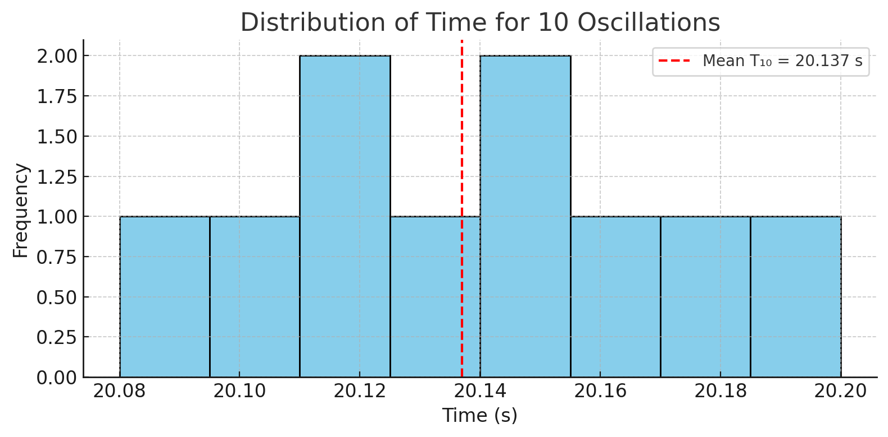
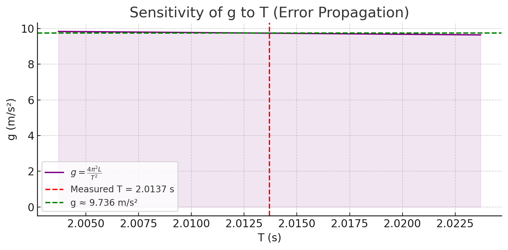

Problem 1
🧪 Measuring Earth's Gravitational Acceleration with a Pendulum
🎯 Motivation
Measuring \(g\), the acceleration due to gravity, is a fundamental experiment. One classical method is using a simple pendulum, where the period of oscillation depends on local \(g\). This project demonstrates how to measure \(g\) using timing and length data, including uncertainty propagation.
🧰 Materials and Setup
- String: \(1.00 \ \text{m}\) long
- Ruler resolution: \(0.01 \ \text{m}\) ⟹ \(\Delta L = 0.005 \ \text{m}\)
- Stopwatch (timing resolution considered negligible in this simulation)
🧪 Data Collection
10 Measurements of 10 Oscillations (Seconds)
| Trial | \(T_{10}\) (s) |
|---|---|
| 1 | 20.12 |
| 2 | 20.15 |
| 3 | 20.10 |
| 4 | 20.20 |
| 5 | 20.08 |
| 6 | 20.14 |
| 7 | 20.18 |
| 8 | 20.11 |
| 9 | 20.13 |
| 10 | 20.16 |
📊 Calculations
1️⃣ Mean Time and Standard Deviation
- \(\bar{T}_{10} = 20.137 \ \text{s}\)
- \(\sigma_{T10} = 0.0368 \ \text{s}\)
- Uncertainty in mean:
$$ \Delta T_{10} = \frac{\sigma_{T10}}{\sqrt{n}} = \frac{0.0368}{\sqrt{10}} \approx 0.0116 \ \text{s} $$
2️⃣ Period of One Oscillation
\[
T = \frac{\bar{T}_{10}}{10} = \frac{20.137}{10} = 2.0137 \ \text{s}
\]
\[
\Delta T = \frac{\Delta T_{10}}{10} = \frac{0.0116}{10} = 0.001165 \ \text{s}
\]
3️⃣ Determining \(g\)
For a simple pendulum:
\[
T = 2\pi \sqrt{\frac{L}{g}} \quad \Rightarrow \quad g = \frac{4\pi^2 L}{T^2}
\]
Using \(L = 1.00 \ \text{m}\) and \(T = 2.0137 \ \text{s}\):
\[
g = \frac{4\pi^2 \cdot 1.00}{(2.0137)^2} \approx 9.736 \ \text{m/s}^2
\]
4️⃣ Propagating Uncertainties
From the formula:
\[
\Delta g = g \cdot \sqrt{ \left( \frac{\Delta L}{L} \right)^2 + \left( \frac{2 \Delta T}{T} \right)^2 }
\]
Substitute values:
\[
\Delta g = 9.736 \cdot \sqrt{ \left( \frac{0.005}{1.00} \right)^2 + \left( \frac{2 \cdot 0.001165}{2.0137} \right)^2 }
\approx 0.050 \ \text{m/s}^2
\]
✅ Final Result
- Measured \(g\): \(9.736 \pm 0.050 \ \text{m/s}^2\)
- Accepted value: \(9.81 \ \text{m/s}^2\)
✅ The result is within uncertainty range of the accepted value.


🧠 Discussion
1. Resolution and Measurement Uncertainty
- Ruler resolution affects \(\Delta L\)
- Timing variation impacts \(\Delta T\)
2. Experimental Variability
- Small release angle maintained at \(< 15^\circ\)
- Assumes no air resistance or string stretch
📌 Deliverables
- ✅ Tabulated raw data
- ✅ Calculated \(T\), \(g\), \(\Delta T\), \(\Delta g\)
- ✅ Full uncertainty derivation and result analysis